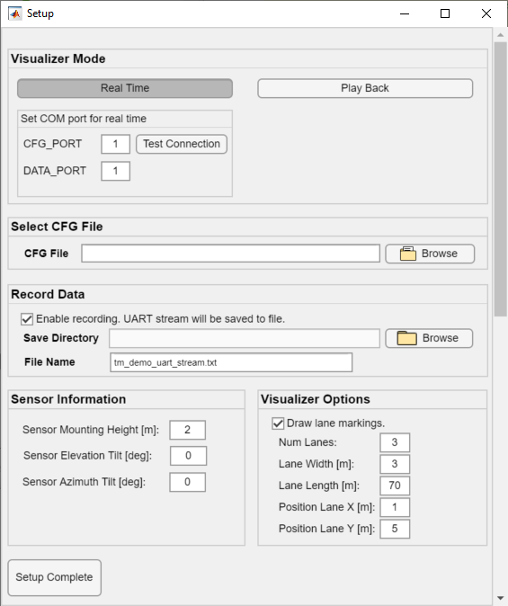
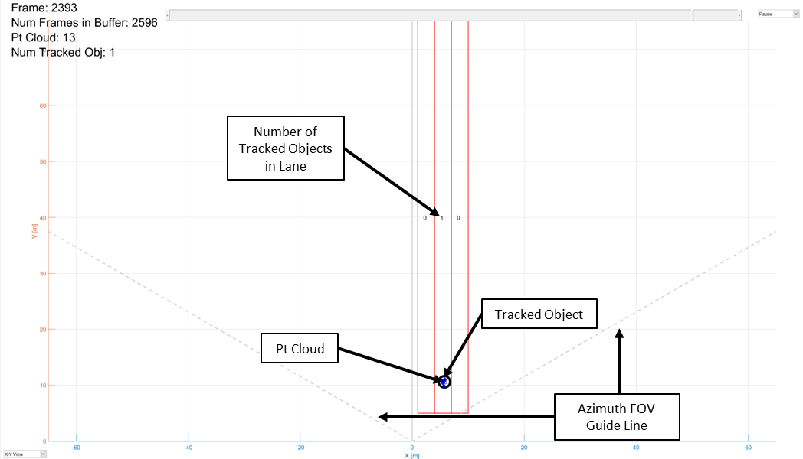
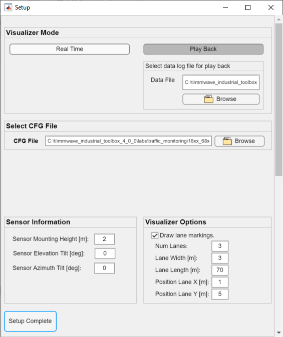
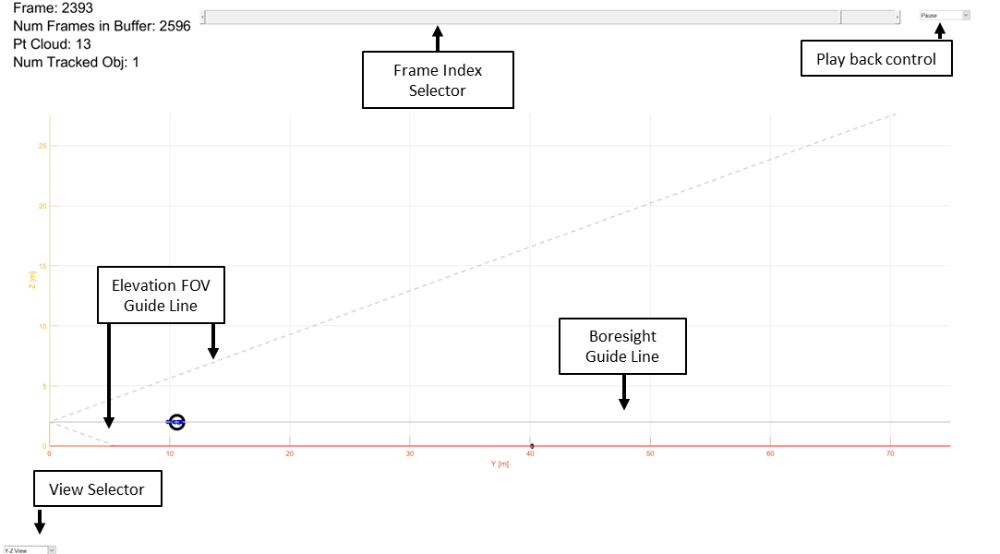

Overview of Traffic Monitoring for 18xx or 68xx
===========
This lab demonstrates how TI single-chip millimeter-wave (mmWave) technology can be used for robust, long-range sensing in traffic monitoring and other applications.
The advanced tracking feature in the lab enables multivehicle tracking across multiple lanes.
The lab uses the IWR6843ISK or IWR1843BOOST EVM evaluation module (EVM) and integrates a complete radar processing chain onto the device.
The processing chain includes the analog radar configuration, analog-to-digital converter (ADC) capture, low-level FFT processing, and high-level clustering and tracking algorithms.
<video width="640" height="360" autoplay loop controls>
<source src="images/tm_overview_vid.webm" type="video/webm">
Area scanner demo video
</video>
This lab is based on the scalable software architecture introduced with mmWave SDK 3.0, which enables simple and flexible deployment of processing components across compatible devices.
With this architecture, the lab now supports 2D as well as 3D processing.
For users familiar with 16xx Traffic Monitoring, the key difference in this lab is the software architecture and new 3D capabilities.
For performance details such as max range and tracking accuracy as measured on 16xx devices please refer to the [Traffic Monitoring Reference Design](http://www.ti.com/tool/TIDEP-0090).
Given similar configuration settings, the performance on the 18xx and 68xx platforms are expected to be similar.
-----------
# Requirements
### Prerequisite
[[y! Run Out of Box Demo
Before continuing with this lab, users should first run the out of box demo for the EVM.
This will enable users to gain familiarity with the sensor's capabilities as well as the various tools used across all labs in the mmWave Industrial Toolbox. ]]
### Required and Supported mmWave Evaluation Modules (EVM)
This lab can be run either on the IWR6843ISK (60GHz) or IWR1843BOOST (77GHz) EVM platforms.
The remainder of the guide will use "EVM" to indicate either platform.
Quantity | Item
------------------|-----------------
1 | Antenna Module Board: [IWR6843ISK](http://www.ti.com/tool/IWR6843ISK)
1 | OPTIONAL: [Industrial mmWave Carrier Board](http://www.ti.com/tool/MMWAVEICBOOST) for CCS based debugging
[[r! IWR6843 ES2.0 Only
This lab is only compatible with ES2.0 version of IWR6843. Check the device version on your IWR6843ISK using the on-chip device markings as shown below>
1. If line 4 reads `678A`, you have an ES2 device. In this case, this lab is compatible with your EVM.
2. If line 4 reads `60 GHZi`, you have an older ES1 device. In this case, the lab is NOT compatible with your EVM. ES2 IWR6843ISK boards are orderable from the EVM link above.
<img src="images/iwr6843_silicon_revision.png" width="500"/>
]]
OR
Quantity | Item
------------------|-----------------
1 | [IWR1843BOOST EVM](http://www.ti.com/tool/IWR1843BOOST)
### Additional Hardware Requirements
Quantity | Item | Details
---------|--------------------------|-----------------
1 | Computer | Windows 7 or 10 PC
1 | Micro USB Cable | Provided with EVM board
1 | Power Supply | For BOOST EVMS, 5V, 3A with 2.1-mm barrel jack (center positive). The power supply can be wall adapter style or a battery pack with a USB to barrel jack cable.
### Software
Tool | Version | Download Link
---------------------------|---------------------------|--------
TI mmWave SDK | 3.5.x.x | [Link to Latest mmWave SDK](http://software-dl.ti.com/ra-processors/esd/MMWAVE-SDK/latest/index_FDS.html) To access a previous version of the mmWave SDK scroll to the bottom of the table and click the link under "MMWAVE-SDK previous release". Repeat to continue stepping back to previous versions.
mmWave Industrial Toolbox | Latest | Download and install the toolbox. Go to [Using TI Resource Explorer & the mmWave Industrial Toolbox](../../../../docs/readme.html) for instructions.
MATLAB Runtime | 2019a (9.6) | Exact version required. https://www.mathworks.com/products/compiler/matlab-runtime.html
Uniflash | Latest | Uniflash tool is used for flashing TI mmWave Radar devices. [Download offline tool](http://www.ti.com/tool/UNIFLASH) or use the [Cloud version](https://dev.ti.com/uniflash/#!/)
-----------
Quickstart
===========
The quickstart guide will cover setting up the EVM, flashing firmware, and running the demo.
## 1. Setup the EVM for Flashing Mode
* For MMWAVEICBOOST + Antenna Module setup: Follow the instructions for [Hardware Setup for Flashing in MMWAVEICBOOST Mode](../../../common/docs/hardware_setup/hw_setup_mmwaveicboost_mode_flashing.html)
* For IWR6843ISK in Standalone/Modular Mode: Follow the instructions for [Hardware Setup of IWR6843ISK/ODS for Flashing Mode](../../../common/docs/hardware_setup/hw_setup_isk_ods_modular_mode_flashing.html)
* For 18xx: follow the instructions for [Hardware Setup of IWRXXXXBOOST for Flashing Mode](../../../common/docs/hardware_setup/hw_setup_boost_evm_for_flashing.html)
## 2. Flash the EVM using Uniflash
Flash the binary associated with the EVM platform listed below using UniFlash. Follow the instructions for [using UniFlash](../../../common/docs/software_setup/using_uniflash_with_mmwave.html)
Platform| BIN Name | Location
---------|------------------------------------|------------
68xx | traffic_monitoring_68xx_demo.bin | `<INDUSTRIAL_TOOLBOX_INSTALL_DIR>\mmwave_industrial_toolbox_<VER>\labs\traffic_monitoring\18xx_68xx_traffic_monitoring\prebuilt_binaries`
18xx | traffic_monitoring_18xx_demo.bin | `<INDUSTRIAL_TOOLBOX_INSTALL_DIR>\mmwave_industrial_toolbox_<VER>\labs\traffic_monitoring\18xx_68xx_traffic_monitoring\prebuilt_binaries`
## 3. Setup the EVM for Functional Mode
* For MMWAVEICBOOST + Antenna Module setup: Follow the instructions for [Hardware Setup of MMWAVEICBOOST + Antenna Module for Functional Mode](../../../common/docs/hardware_setup/hw_setup_mmwaveicboost_mode_functional.html)
* For IWR6843ISK in Standalone/Modular Mode: Follow the instructions for [Hardware Setup of IWR6843ISK/ODS for Functional Mode](../../../common/docs/hardware_setup/hw_setup_isk_ods_modular_mode_functional.html)
* For 18xx: Follow the instructions for [Hardware Setup of IWRXXXXBOOST for Functional Mode](../../../common/docs/hardware_setup/hw_setup_boost_evm_for_functional.html)
At this point, the EVM should be powered, connected to the PC, flashed with the demo, and put in functional mode. The hardware setup is now complete.
## 4. Run the Lab
### 1. EVM Mounting and Scene Conditions
For a quick start evaluation, it is recommended to setup the EVM outside in an open area such as a parking lot.
Once the quick start is complete and an understanding of the lab's capabilities is gained, the lab can be run in more complex and application specific scenes.
For the quick start the EVM should be mounted:
- Elevated 2.5m from the ground (mounting height)
- Oriented with the Z-axis towards the sky and the Y-axis pointed straight towards the area of interest. See the image below to map EVM orientation to axes orientations.
- For the simplicity in of the quick start setup, elevation and azimuth tilt are set at 0 degrees.
<img src="images/evm_orientation.png" width="500" class="img-responsive"/>
During further evaluation it may be necessary to mount the EVM at a different height or angle. The height, elevation tilt, and azimuth tilt should be measured and noted for input in later steps.
### 2. Launch the Visualizer
[[y! MATLAB Runtime Version R2019a (9.6)
**Exact version** R2019a (9.6) required. Download from: https://www.mathworks.com/products/compiler/matlab-runtime.html
Other labs in the mmWave Industrial Toolbox may use version R2017a (9.2). For this lab, version R2019a (9.6) MUST also be installed. ]]
* Navigate to `<INDUSTRIAL_TOOLBOX_INSTALL_DIR>\mmwave_industrial_toolbox_<VER>\labs\traffic_monitoring\18xx_68xx_traffic_monitoring\gui`
* Double click to launch **tm_visualizer.exe**
* A black console window will appear. After 30-60sec, a setup window will appear as shown below.
### 3. Configure Visualizer

**Visualizer Mode**
* Click the **Real Time** button
* In Real Time mode the visualizer will connect to given COM ports and parse the incoming stream for visualization
* In Play Back mode the visualizer will read in a txt file and enable a user to review the recorded byte stream from a real time session.
* Enter the COM ports associated with the mmWave EVM.
* Optional: Use **Test Connection** to ensure that COM ports are available and a test command can be sent and received.
**Select CFG File**
* Use the **Browse** button to select the CFG file to load to the device or enter the full path and file name into the text field box.
* To load the demo CFG file navigate to `..\mmwave_industrial_toolbox_<VER>\labs\traffic_monitoring\18xx_68xx_traffic_monitoring\chirp_configs`
* For 68xx: Select the **68xx_traffic_monitoring_70m_MIMO_2D.cfg** file
* For 18xx: Select the **18xx_traffic_monitoring_70m_MIMO_2D.cfg** file
* Note: For each platform there is also a 3D CFG file included to demonstrate the sensor's 3D detection capabilities. Here the tradeoff in enabling a 3D detection is coarser velocity resolution compared to 2D.
**Record Data**
* Check the **Enable recording** option to record the UART stream to a text file for play back later on. Enabling this option will log the byte stream in HEX format to a text file.
* Specify the **Save Directory** and **File Name** of the log file.
NOTE: The record data feature will automatically create a text file with the name specified at the save directory.
If there is already an existing file with the same name the file will be written over. Ensure path and/or file name are unique if this is not desired.
**Sensor Information**
* Sensor Mounting Height is the height of the EVM from the ground in meters
* Sensor Elevation tilt is the angle in degrees the sensor is tilted either upwards (+θ) towards the ceiling or downwards towards the floor (-θ)
* Sensor Azimuth tilt is the angle in degrees the sensor is tilted either towards +X (+θ) or towards -X (-θ)
**Visualizer Options**
The options in this panel determine whether and how traffic lanes markings appear in the visualizer:
* Num Lanes: the number of lanes to draw. Lanes will be replicated so that they are adjoining each other.
* Lane Width: the width of each lane in meters (all lanes have the same width). A +width value will replicate the lanes towards the +X direction. A -width value will replicate towards the -X direction.
* Lane Length: the length of the lanes in meters (all lanes have the same length)
* Position Lane X and Y: this is the origin coordinate of the first lane. It should correlate with the corner closest to the sensor.
**Setup Complete**
* Click the **Setup Complete** button to confirm all the settings and send the config to the mmWave EVM.
* The setup window will close and the main visualizer plot will open next.
NOTE: If the mmWave EVM was is currently running the new config file cannot be resent. The visualizer will instead open and attempt to continue parsing the incoming UART stream. To ensure that the intended CFG file can be loaded, toggle NRST on the EVM before clicking 'Setup Complete'. (This should have already been done when the EVM was returned to Functional Mode).
### 4. Understanding the Visualizer Output
The window will open in a top-down, X-Y view of the scene.
NOTE: The data incoming from the sensor is relative to the sensor itself without consideration for its mounting position.
The visualizer transforms and translates the points based on the input sensor information during setup.
This is so Z = 0 on the plot correlates with the ground and the lanes can be defined on the same plane as the ground in cartesian coordinates.

The visualizer will plot three types of detected object data:
* **Point Cloud** is represented by blue points and is the output of the traditional range-doppler processing chain (same processing chain as the Out of Box demo from the prerequisite section).
* Since the CFG file has static clutter removal enabled, the point cloud only shows detections for moving objects.
* **Tracked Objects** are the output of the GTRACK algorithm and are represented by black circles with a number inside for the tracked object's ID number. The dynamic point cloud is given as input to the tracking algorithm which groups and tracks points across the scene.
To end the visualizer session, exit out using the "X" in the upper right corner. If Record Data was enabled this will also close the text file and end recording.
The visualizer saves the settings from the setup window and relaunching the visualizer will prepopulate any fields with the same values from the previous session.
### 5. Replay Data:

* Relaunch the visualizer
* Select **Play Back** mode
* Browse to and select the the .txt data file to load
* Browse to and select the CFG file used when the data was collected.
* Input the Sensor Information parameters. They should match what was used when the data was collected.
* The Visualizer Options can change for play back if desired.
In addition to plotting the data coming from the mmWave EVM, the visualizer also draws reference lines to indicate the approximate azimuth and elevation field of view (FOV) of the sensor.
Using the drop down menu in the left corner, users can switch to other views of the scene.
A useful view is the 2D, Y-Z view of the scene which gives an indicator of how the mounting height and down tilt affects the min and max detectable range of the sensor given the narrower elevation FOV.
The image below is from using the visualizer in play back mode to examine the Y-Z view. The view shows how the lower elevation FOV guideline intersects with the ground, marking the boundary for minimum detectable range.
Outside the guide lines, the antenna gain is below a threshold at which detection of objects can be difficult. When debugging missed detections it's important to consider the effect of sensor placement and mounting.

This concludes the Quickstart Section
-----------
Developer's Guide
===========
* [Build the firmware from source code](#build-the-firmware-from-source-code)
* [Work with GUI source code](#work-with-gui-source-code)
Build the Firmware from Source Code
-----------
### 1. Software Requirements
Tool | Version | Download Link
----------------------------|---------------------------|--------------
TI mmWave SDK | 3.5.x.x | [Link to Latest mmWave SDK](http://software-dl.ti.com/ra-processors/esd/MMWAVE-SDK/latest/index_FDS.html) To access a previous version of the mmWave SDK scroll to the bottom of the table and click the link under "MMWAVE-SDK previous release". Repeat to continue stepping back to previous versions.
Code Composer Studio | 8.3.1 | [Code Composer Studio v8.3.1](http://processors.wiki.ti.com/index.php/Download_CCS#Code_Composer_Studio_Version_8_Downloads)
mmWave Industrial Toolbox | 4.x.x | Download and install the toolbox. Go to [Using TI Resource Explorer & the mmWave Industrial Toolbox](../../../../docs/readme.html) for instructions.
### 2. Import Lab Project
To import the source code into your CCS workspace, CCS projects are provided for the mmWave SDK Out-of-box demo in the mmWave Industrial Toolbox.
[[b! Project Workspace
When importing projects to a workspace, the files are LINKED into the workspace. It is important to note that modifying the files in the CCS workspace will also affect the source files.
Practice version control in the case that revisions need to be reverted.]]
- Start CCS and setup workspace as desired.
- Import the project(s) specified below for the EVM platform to CCS. See instructions for importing [here](../../../../docs/readme.html#import-ccs-projects-from-the-mmwave-industrial-toolbox-into-code-composer-studio)
Platform | Project Name | Location in Industrial Toolbox
----------|-------------------------|-----------------------------
68xx |traffic_monitoring_68xx_dss | `<INDUSTRIAL_TOOLBOX_INSTALL_DIR>\mmwave_industrial_toolbox_<VER>\`<br>`labs\traffic_monitoring\18xx_68xx_traffic_monitoring\src`
68xx |traffic_monitoring_68xx_mss | Same as above
18xx |traffic_monitoring_18xx_dss |`<INDUSTRIAL_TOOLBOX_INSTALL_DIR>\mmwave_industrial_toolbox_<VER>\`<br>`labs\traffic_monitoring\18xx_68xx_traffic_monitoring\src`
18xx |traffic_monitoring_18xx_mss | Same as above
- Verify that the import occurred without error: in CCS Project Explorer both DSS and MSS projects should appear.
For the remainder of the guide, the steps for 68xx and 18xx EVMs are the same except for ensuring that the appropriate device version is selected.
The notation <device type> will be used in place of 68xx or 18xx.
[[r! Error during Import to IDE
If an error occurs, check that the software dependencies listed above have been installed. Errors will occur if necessary files are not installed in the correct location for importing.
]]
### 3. Build the Lab
1. First, select the DSS project (traffic_monitoring_<device type>_dss) so it is highlighted. Right click on the project and select **Rebuild Project**.
2. After the DSS project has succesfully built, select the MSS project (traffic_monitoring_<device type>_mss) so it is highlighted. Right click on the project and select **Rebuild Project**.
2. On successful build, the following should appear:
* In traffic_monitoring_<device type>_dss → Release, **traffic_monitoring_<device type>_dss.xe674** (this is the C67x binary used for CCS debug mode)
* In traffic_monitoring_<device type>_mss → Release, **traffic_monitoring_<device type>_mss.xer4f** (this is the Cortex R4F binary used for CCS debug mode) and **traffic_monitoring_<device type>_demo.bin** (this is the flashable binary used for deployment mode)
{{y Selecting Rebuild instead of Build ensures that the project is always re-compiled. This is especially important in case the previous build failed with errors.}}
[[r! Build Fails with Errors
If the build fails with errors, please ensure that all the software requirements are installed as listed above and in the mmWave SDK release notes.
]]
[[b! Note
As mentioned in the [Quickstart](#quickstart) section, pre-built binary files, both debug and deployment binaries are provided in the pre-compiled directory of the lab.
]]
### 4. Execute the Compiled Lab
There are two ways to execute the compiled code on the EVM:
* **Deployment mode**: In this mode, the EVM boots autonomously from flash and starts running the bin image
* Use the **traffic_monitoring_<device type>_demo.bin** found at `<CCS_PROJECT_WORKSPACE_DIR>\traffic_monitoring_<device type>_mss\Release\` and follow the same process in the [Quickstart](#quickstart) section except flash this binary instead.
* **Debug mode**: This mode is is used for downloading and running the executable from CCS. This mode enables JTAG connection with CCS while the lab is running and is useful during development and debugging.
* Follow the [CCS Debug Mode Guide](../../../common/docs/software_setup/using_ccs_debug.html), using the binaries listed below.
* After CCS Debug mode is setup, launch the visualizer and proceed as described in the [Run the Lab section of the Quickstart](#4-run-the-lab)
Debug binary | Location | Connect and load to
---------------|----------|----------------------
traffic_monitoring_<device type>_mss.xer4f | `<CCS_PROJECT_WORKSPACE_DIR>\traffic_monitoring_<device type>_mss\Release\` | Cortex_R4_0
traffic_monitoring_<device type>_dss.xe674 | `<CCS_PROJECT_WORKSPACE_DIR>\traffic_monitoring_<device type>_dss\Release\` | C674X_0
-----------
Work with GUI source code
-----------
{{y Working with and running the visualizer source files requires a full MATLAB license not just the MATLAB Runtime Engine}}
* The visualizer source files are located at `<INDUSTRIAL_TOOLBOX_INSTALL_DIR>\mmwave_industrial_toolbox_<VER>\labs\traffic_monitoring\18xx_68xx_traffic_monitoring\gui`
* Running tm_visualizer.m results in the same fucntionality as the executable used in the Quickstart section; please refer to the section for details.
* Files of interest:
* tm_visualizer.m: Main visualizer script that calls the setup, parsing, and plotting functions.
* readUARTToBuffer.m: Copies any bytes available on the serial port object to a buffer in the Matlab workspace
* parseBytes_TM: Receives the buffer and parses bytes into an output struct representing the data in the frame.
Data Formats
-----------
A TLV(type-length-value) encoding scheme is used with little endian byte order. For every frame, a packet is sent consisting of a fixed sized **Frame Header** and then a variable number of TLVs depending on what was detected in that scene. The TLVs can be of types representing the point cloud, target list object, and associated points.
### Frame Header
Size: 52 bytes
```Matlab
frameHeaderStructType = struct(...
'magicWord', {'uint64', 8}, ... % syncPattern in hex is: '02 01 04 03 06 05 08 07'
'version', {'uint32', 4}, ... % Software Version
'platform', {'uint32', 4}, ... % A6843
'timeStamp', {'uint32', 4}, ... % Message create time in cycles
'totalPacketLen', {'uint32', 4}, ... % In bytes, including header
'frameNumber', {'uint32', 4}, ... % Frame Number
'subFrameNumber', {'uint32', 4}, ... % Sub-Frame number
'chirpProcessingMargin', {'uint32', 4}, ... % time left after chirp processing in cycles
'frameProcessingMargin', {'uint32', 4}, ... % time left after frame processing in cycles
'trackingProcessingTime', {'uint32', 4}, ... % time to run tracker
'uartSendingTime', {'uint32', 4}, ... % time to send uart message
'numTLVs' , {'uint16', 2}, ... % Number of TLVs in this frame
'checksum', {'uint16', 2}); % Subframe number.
```**Frame Header Structure in MATLAB syntax for name, type, length**
### TLVs
The TLVs can be of type **DPIF_PointCloudSpherical**, **DPIF_PointCloudSideInfo**, **TARGET_LIST_3D**, or **TARGET_INDEX**.
#### **TLV Header**
Size: 8 bytes
```Matlab
% TLV Type: 06 = DPIF Point cloud spherical, 07 = Target object list, 08 = Target index, 09 = DPIF Point Cloud Side Info
tlvHeaderStruct = struct(...
'type', {'uint32', 4}, ... % TLV object
'length', {'uint32', 4}); % TLV object Length, in bytes, including TLV header
```**TLV header in MATLAB syntax**
Following the header, is the the TLV-type specific payload
#### **Point Cloud TLV**
Type: DPIF_POINT_CLOUD_SPHERICAL
Size: sizeof (DPIF_PointCloudSpherical) x numberOfPoints
Each Point Cloud TLV consists of an array of points. Each point is defined in 16 bytes.
```java
DPIF_PointCloudSpherical = struct(...
'range', {'float', 4}, ... % Range, in m
'azimuth', {'float', 4}, ... % Azimuth angle, in rad
'elevation', {'float', 4}, ... % Elevation angle, in rad
'doppler' {'float', 4}, ... % Doppler, in m/s
```**Point Structure in MATLAB syntax**
#### **Point Cloud Side Info TLV**
Type: DPIF_POINT_CLOUD_SIDE_INFO
Size: sizeof(DPIF_PointCloudSideInfo) x numberOfPoints
Each Point Cloud Side Info TLV consists of an array of point side info data. Each is 8 bytes.
```java
DPIF_PointCloudSideInfo = struct(...
'snr', {'int16_t', 2}, ... % SNR, ratio
'noise' {'int16_t', 2}, ... % Noise
```**Point Side Info Structure in MATLAB syntax**
#### **Target Object TLV**
Type: TARGET_LIST_3D
Size: sizeof (targetStruct3D) x numberOfTargets
Each Target List TLV consists of an array of targets. Each target is defined as below:
```java
targetStruct3D = struct(...
'tid', {'uint32', 4}, ... % Track ID
'posX', {'float', 4}, ... % Target position in X dimension, m
'posY', {'float', 4}, ... % Target position in Y dimension, m
'posZ', {'float', 4}, ... % Target position in Z dimension, m
'velX', {'float', 4}, ... % Target velocity in X dimension, m/s
'velY', {'float', 4}, ... % Target velocity in Y dimension, m/s
'velZ', {'float', 4}, ... % Target velocity in Z dimension, m/s
'accX', {'float', 4}, ... % Target acceleration in X dimension, m/s2
'accY', {'float', 4}, ... % Target acceleration in Y dimension, m/s
'accZ', {'float', 4}, ... % Target acceleration in Z dimension, m/s
'ec[16]', {'float', 16x4}, ... % Tracking error covariance matrix, [4x4] in range/azimuth/elevation/doppler coordinates
'g', {'float', 4}, ... % Gating function gain
'confidenceLevel' {'float', 4}, ... % Confidence Level
```**Target Structure in MATLAB syntax**
#### **Target Index TLV**
Type: TARGET_INDEX
Size: numberOfPoints
Each Target List TLV consists of an array of target IDs. A targetID at index ***i*** is the target to which point ***i*** of the frame's point cloud was associated.
Valid IDs range from 0-249.
```java
targetIndex = struct(...
'targetID', {'uint8', 1}); % Track ID
```**Target ID Structure in MATLAB syntax**
Other Target ID values:
Value | Meaning
------------|-----------
253 | Point not associated, SNR too weak
254 | Point not associated, located outside boundary of interest
255 | Point not associated, considered as noise
Tracker Customization
-----------
* Please refer to the **People Counting Demo Customization Guide** which can be found at `C:\ti\<mmwave_industrial_toolbox_install_dir>\labs\long_range_people_detection\68xx_long_range_people_det\docs\pplcount_customization_guide.pdf`
Need More Help?
===========
* Additional resources in the documentation of the mmWave SDK:
* mmWave SDK Module Doc located at `<mmwave_sdk_install_dir>/docs/mmwave_sdk_module_documentation.html`
* mmWave SDK User's Guide located at `<mmwave_sdk_install_dir>/docs/mmwave_sdk_user_guide.pdf`
* Find answers to common questions on [mmWave E2E FAQ](https://e2e.ti.com/support/sensor/mmwave_sensors/w/wiki)
* Search for your issue or post a new question on the [mmWave E2E forum](https://e2e.ti.com/support/sensor/mmwave_sensors/f/1023)